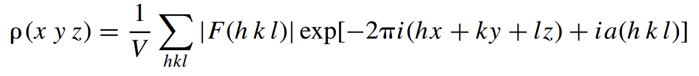

8. Experimental Phasing¶
electron density in a crystal can be obtained by calculating the Fourier summation:
{kind=link}
in which |F(h k l)| is the structure factor amplitude of reflection (h k l), including the temperature factor, and α(h k l) is the phase angle. x, y, and z are coordinates in the unit cell.
From the diffraction pattern, the values of I (h k l) are obtained after applying the some correction factors. Because I(h k l) =|F(h k l)| 2, then amplitudes |F(h k l)| can be found.
In principle, five techniques exist for solving the phase problem in protein X-ray crystallography:
The isomorphous replacement method, which requires the attachment of heavy atoms (atoms with high atomic number) to the protein molecules in the crystal.
The multiple wavelength anomalous diffraction method. It depends on the presence of sufficiently strong anomalously scattering atoms in the protein structure itself. Anomalous scattering occurs if the electrons in an atom cannot be regarded as free electrons.
The single-wavelength anomalous diffraction method
The molecular replacement method, for which the similarity of the unknown structure to an already known structure is a prerequisite.
Direct methods. In the context of macromolecular crystallography, this approach is used in substructure determination, and at very high resolution (beyond 1.2 Å)
The multiple- and single-wavelength diffraction methods do not necessarily depend on the attachment of a heavy-atom-containing reagent to the protein, but they do require the presence of an anomalously scattering atom and this can be a heavy atom inherent to the protein.
In case you have anomalous diffraction dataset use: